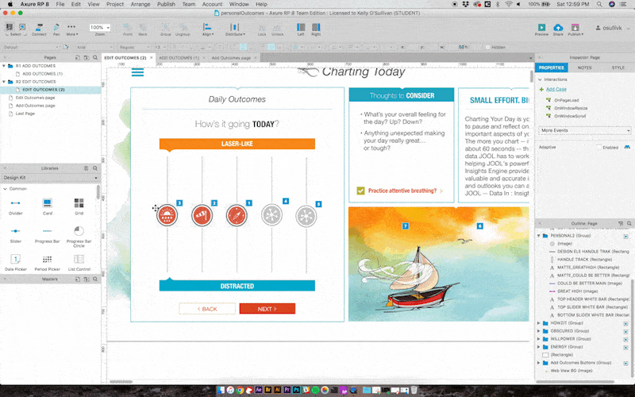

JOOL Health | UI/UX Internship
Methods Used
User Interviews, User Testing, Rapid Prototyping, Heuristic Analysis, Affinity Diagramming
My Role
UI/UX Design Intern
My Responsibilities
Interview Protocol Development, Study Moderation, Note-taking, Data Analysis, Final Presentation and Report Writing
Your body is the boat...
Over the summer of 2018 I had the opportunity to work for JOOL Health, an Ann Arbor based startup whose mobile and web applications focus on helping users to build a set of core values, craft a purpose, and live a more well-rounded and directed life. While working there, I had several key responsibilities in order to help JOOL move the ball forward in terms of making their user experience even more streamlined than it was when I began my work with the company. I can separate out several major areas: rapid prototyping new and existing user interfaces for JOOL’s web and mobile applications, conducting user tests both in formal and informal settings, interviewing a wide variety of users, persona creation based on interview data for JOOL’s development team to keep in mind while creating future features in their various applications, and a variety of cross-disciplinary support that I provided to multiple departments within JOOL.
Rapid Prototyping, User Testing
My role with JOOL began with a focus on prototyping and testing. I had ample opportunity to grow and refine my testing methods, including both the soft skills needed to make impromptu user tests run smoothly as well as the technical skills required to make tests feel as genuine as using the real technology they were meant to mimic.

I began my series of user tests by utilizing existing prototypes as well as test versions of JOOL's mobile app. It was an enjoyable introduction to observing and documenting user reactions to the application, and informed my subsequent prototype creation and test refinements.
With regards to the technical side of testing, I was able to develop a skill set for rapid prototyping software, specifically Sketch, Axure and Illustrator (along with a slew of relevant add-ons and plugins meant to make the prototyping process more efficient and the testing experience feel more authentic).
Interviewing, Persona Creation
As I progressed through my internship my mentor directed me that he was in need of a solid base of user research for the company to use as a basis for their development choices moving forward. With this in mind, I wrote and refined a user interview protocol and set myself to implementing it in a substantial series of interviews with both current and former JOOL users.
I spent a substantial amount of time conducting remote interviews with thirty-five current or former JOOL users. Additionally, I spoke with a number of stakeholders both within JOOL and in companies who made use of our product (and our customer facing analytics software, JOOL Vibe). During this process I was able to build out a comprehensive set of user data that I used to connect relevant themes and beagn to synthesize said data into recommendations for JOOL moving forward.
In addition, I created personas for the development team at the company to establish a link between what they built into the app and those who would actually use these features.
Final Recommendations
As my internship neared its end, my main goal was to distill the dense set of qualitative research data that I had amassed into a set of actionable user interface changes that JOOL could take and implement. I had spoken with a large number of users and based on their feedback I was able to make recommendations in the following areas for JOOL to add into their design thinking moving forward.
- Some language users rely on to chart the way they are feeling day-to-day clashes with the mental models those users have about measuring the feeling in question. When users chart a "high" stress day in the JOOL app, that actually means that those users will be experiencing a good/stress free day instead of how we typically characterize a "high stress" day. Moving forward, language like this should be mindful of the connotations we associate with it, regardless of the word's relationship with a visual element (i.e. "high" being the right word to use at the top of a chart in most other situations).
- Users are skeptical about an application telling them that they are about to experience a negative or bad day, and predictions made by the JOOL app should refrain from using language that users will interpret as an absolute certainty. Adding in language like, "We are 70% sure that you will be experiencing a high stress day today" seems less like the application is telling you what is about to happen and acts more as a primer for the day ahead. It also happens to be more transparent with regards to how JOOL makes predictions about how people are likely to feel on a given day.
- Users felt overwhelmed when first encountering the application and all of the tools contained within it. Introducing a system in which segments of the application's functionality is unlocked over an introductory period of use could serve as a more digestible prolonged onboarding flow so that users have an opportunity to take in and understand what the JOOL app is really doing for them.
- JOOL's app is one that is very powerful in its depth of features and tools that can help users improve their lives. At the same time, the application has a huge variety of visual elements that often confused or mystified users simply from the sheer number of disparate yet important design symbols. One of my biggest takeaways from my time spent with this app's userbase was that users craved a more unified design style in order to reduce the cognitive load needed to successfully understand all that the JOOL app was doing for them. Fewer visual elements for a user to understand will lead to more efficient users, which is a good thing for the JOOL app as it is one whose purpose is to quickly guide its users through a mindfulness meditation experience meant to keep their lives on track.
- In addition, through extensive user testing I was able to catch several interactions in a newly redesigned onboarding flow that enabled the engineering team to avoid situations in which users were brought to areas of the app that they had not yet been introduced to.
Looking Back
Experience and interface design do not exist in a vacuum. Every interview, test, survey or any other tool we make use of has to be designed to work for as many of the teams within a company as possible. Methodologies used to get to the root of a user experience problem are only as strong as the amount of pertinent factors pertaining to the product that they consider in their application. I would be thankful for my opportunity to work with JOOL Health were this the only thing that I took away from the experience. Fortunately there was much, much more. I had the opportunity to work with multiple departments within the organization, which helped me to gain valuable additional perspectives to how a product should develop over time. I was able to present my findings to the entire company and through that was really able to see how different groups interpret and appreciate the findings gathered through user research. I had the opportunity to hone my rapid prototyping skills and learn new programs and their place in future research projects as well as new methods of conducting research. JOOL Health was a great place to continue developing my skills, and in the end it made me hungry for my next challenge.